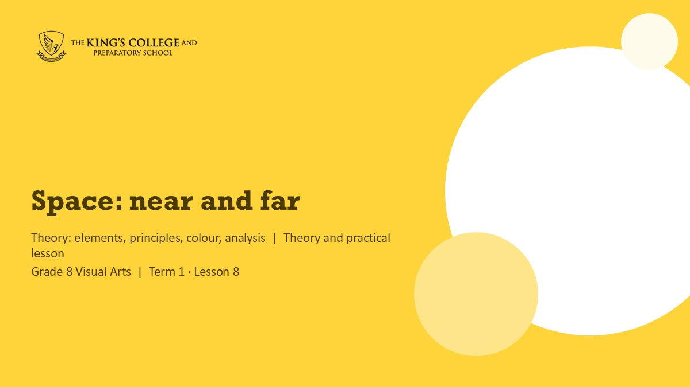

Term 1 · Lesson 8 · Theory and practical lesson
Principles of design
Start here
Today I will
- Today I will name the principles of design
- Today I will find the principles in famous artworks
- Today I will sketch thumbnails that show balance, contrast and emphasis
A chef has ingredients and a recipe. In art, the elements are the ingredients. What do you think the recipe is?
Words to know
- Principles of design
- The ways artists arrange the elements of art in a picture.
- Balance
- How the visual weight is spread so the picture feels steady (symmetrical or asymmetrical).
- Contrast
- Strong differences side by side, such as light and dark or rough and smooth.
- Emphasis
- Making one part stand out so the viewer looks there first.
- Focal point
- The place your eye goes to first in an artwork.
- Rhythm and movement
- Repeated elements that lead your eye through the picture, like a beat in music.
Slides

Videos
Notes
How artists arrange the elements, using the principles named in the IEB SAGS: unity and harmony, balance, rhythm and movement, contrast, dominance, emphasis, direction and focal point, pattern and repetition, and depth and perspective.
The principles of design
- Unity and harmony: Everything belongs together; parts look like a family.
- Balance: Weight spread evenly (symmetrical) or unevenly but steady (asymmetrical).
- Rhythm and movement: Repeated marks lead the eye, like Van Gogh's swirling sky.
- Contrast, dominance and emphasis: Differences that make one part stronger or stand out.
- Direction and focal point: Lines and shapes that lead the eye to the most important place.
- Pattern, repetition, depth and perspective: Repeated motifs; and ways to make a flat picture look deep.
Three principles to sketch
| Principle | In a thumbnail sketch |
|---|---|
| Balance | One big shape on one side balanced by two small shapes on the other. |
| Contrast | A dark shape against a light background, or smooth next to rough. |
| Emphasis | One shape that is different (size, tone or position) from all the others. |
Elements are the ingredients; principles are the recipe.
Practical
You need: Artwork cards or slides, journal, pencil
Principle hunt and three thumbnails
- In pairs, take a card and decide which principle shows most clearly.
- Write the artwork's name and the principle in your journal with one reason ('I can see emphasis because…').
- Swap cards and repeat until time is up (about 15 minutes).
- On your own, draw three small boxes in your journal.
- Sketch one thumbnail each for balance, contrast and emphasis, using simple shapes (about 15 minutes).
- Label each thumbnail.
Test yourself
- What is the difference between the elements of art and the principles of design?
- What is a focal point?
- Give an example of contrast.
Show answers
1. Elements are the building blocks (line, colour, etc.); principles are how they are arranged. 2. The place the eye goes to first. 3. Any: light next to dark, rough next to smooth, big next to small, warm next to cool.
Finished early?
Add a fourth principle to your thumbnails.
- Draw a small box next to your three thumbnails.
- Repeat one simple shape or mark across the box so it leads the eye from one side to the other.
- Make one shape different in size or tone to create a focal point at the end.
- Label it 'rhythm and movement' and circle the focal point.